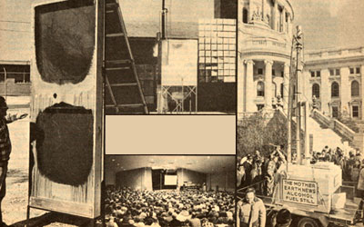

CLOCKWISE FROM LEFT: A solar still designed by MOTHER-reader Jim Langley... MOM's experimental sun-fired distillery... Seminar attendees crowd around MOTHER's 6"" column still at the Wisconsin state capitol... Nearly 1,000 people get the ""alcohol message"" in Michigan.